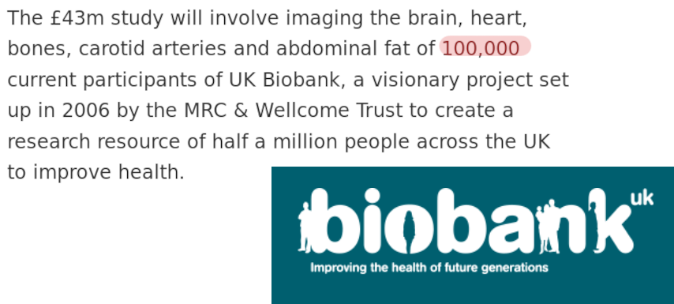
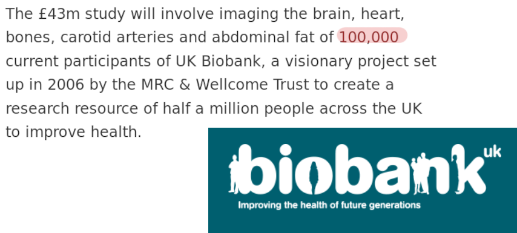

Decentralized Management
|
Adina Wagner
 @AdinaKrik
@AdinaKrik |
||
|
Psychoinformatics lab,
Institute of Neuroscience and Medicine, Brain & Behavior (INM-7) Research Center Jülich |
 |
Debian in Arts & Science |
Acknowledgements
|
Funders


Collaborators
|
Perks of being a (neuro)scientist...
A growing culture of open data

Perks of being a (neuro)scientist...
... with many open dataset of several TB of data!
 

Perks of being a (neuro)scientist...
A large and growing amount of open source software


... and many more! |
Perks of being a (neuro)scientist...
Coordinated efforts towards common standards

Perks of being a (neuro)scientist...
We can work on questions targeting
treatments for mental and neural illness

The good news, the bad news
| Large, open datasets | No formal data management training |
| More data than we could ever analyze! | More data than we could ever fit on our hard drives and compute clusters |
| Fantastic open source analysis software, with a broad range of methods and pipelines | Transparency and reproducibility is threatened as different software versions produce different results Kiar et al., 2020 & as analyses are multi-stepped and complex |
| Standards towards consistent file organization, description, and interoperability | Standards aren't static and evolve over time |
| Invaluable patient data | Patient data is sparse and can't be shared as patients privacy has to be ensured |